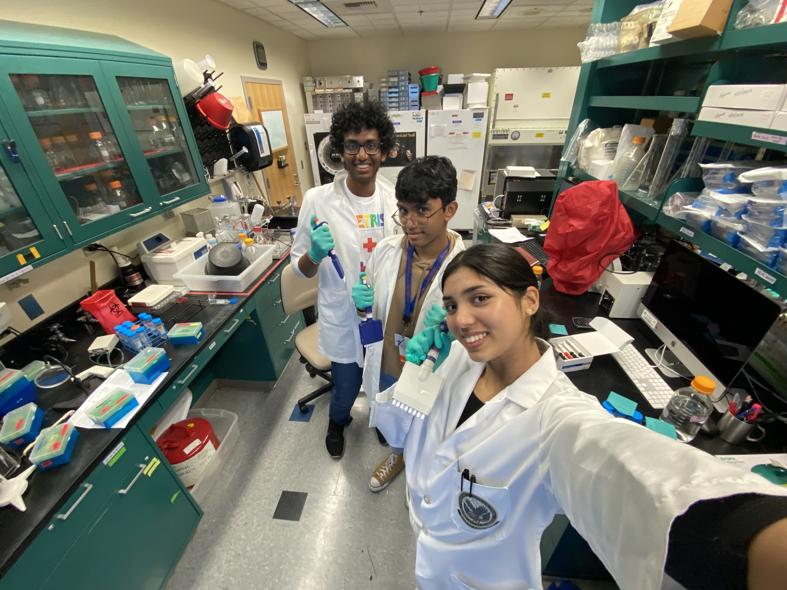
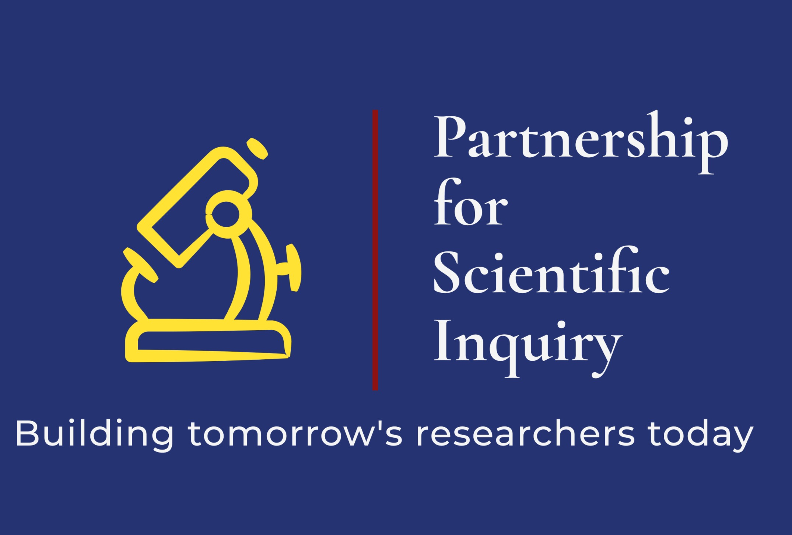
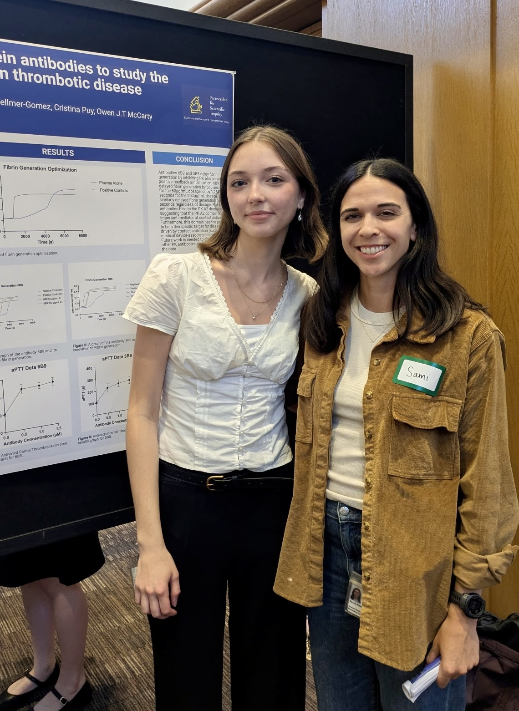
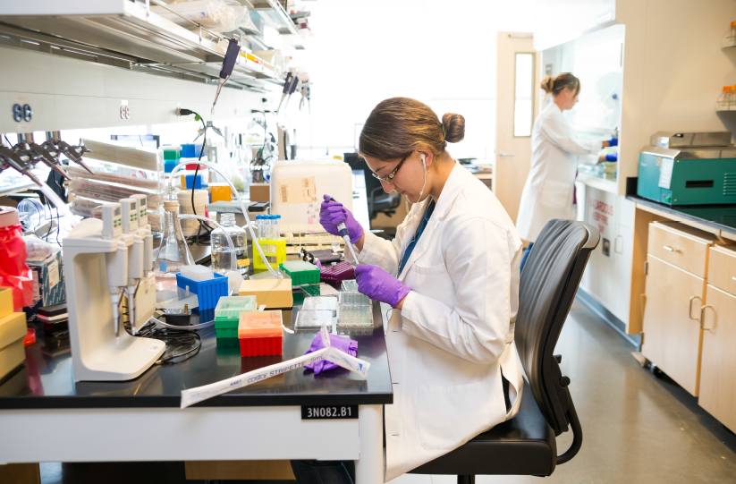
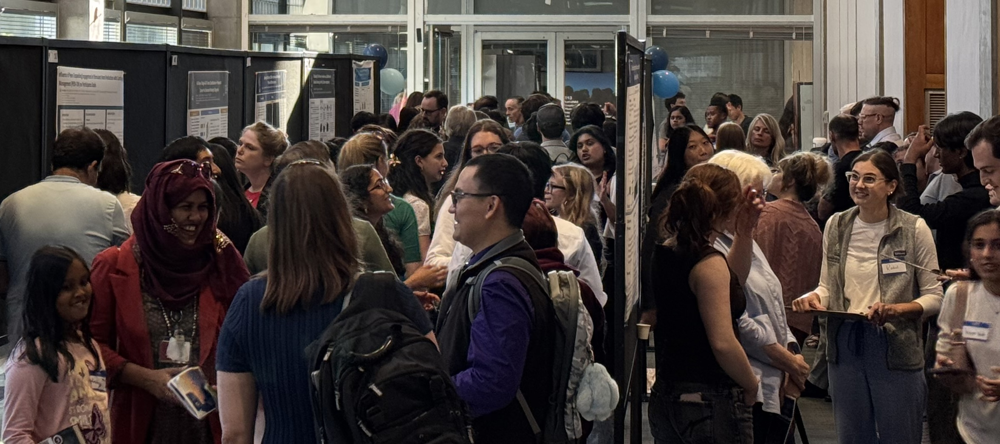

Academic Term
January – May
- Weekly classes
- Weekly mentorship meetings
- DNA Day Essay
- Journal Club Presentation
- Research Proposal
3 Major Assignments
Partnership for Scientific Inquiry
The Partnership for Scientific Inquiry (PSI) program introduces high school students to the scientific process, encouraging their scientific passion and fostering a relationship between researchers and the local community.

Program Overview
Our program accepts Sophomore, Junior, and Senior high school students who are interested in pursuing careers in medicine or biomedical research through a 16-week course from January to May. Students are introduced to the scientific process and gain access to research scientists from OHSU and other Portland research institutes.
The semester-long program typically ends with a summer internship opportunity to work alongside a research mentor, requiring students to be at least 16 years old.
We meet for two hours on Wednesdays (January-May) for a lecture series and to learn about ongoing research projects conducted by scientists at Oregon Health & Science University (OHSU).

Our Story
This includes having parents without graduate-level education and those from low socioeconomic status. Our goal is to create a level playing field where talent, curiosity, and dedication are the primary criteria for success, thus inspiring future leaders in science from different backgrounds.
We are committed to providing equitable access and opportunities in the world of biomedical research, ensuring that every aspiring student, regardless of their background, can participate and excel in this transformative experience.
TestimonialsJanuary – May
June – August
August
Elements of the Program

All students are matched one-on-one with a mentor to guide them through the 16-week didactic course. Mentors come from varied training backgrounds and may be graduate students, medical students, laboratory technicians, postdoctoral researchers, or other members of the OHSU research community.
About the Program
Students may elect to join a scientific laboratory or perform clinical research over the summer. Students who do not participate in an internship will do a literature review or independent data analysis project.
Important Dates
As of 2023, we host a poster symposium at the end of the summer internship series to showcase the students' research and allow them to practice their presentation skills.
View Conference AwardsCommunity Support